Next: About this document ...
Astrophysics. Exam I Review
Chapter 2
- Ellipses (see your notes from Friday)
- Kepler's Laws (see your notes)
- Newton's Laws (see your notes)
- Shell theorems (see your notes)
- Law of Universal Gravitation (see your notes)
- Coordinate conventions for 2-body problem (see your notes)
- Reduced mass:
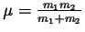
- Total energy in terms of reduced mass:
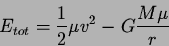
- Total orbital angular momentum
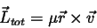
- Results from the derivation of Kepler's 2nd law
-
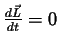 (angular momentum is constant in 2-body
problem)
-
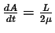
-
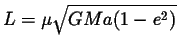
- The total energy of a 2-body system is 1/2 of the time-average potential
energy:
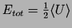
- Kepler's 3rd law (modified)
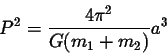
- Virial Theorem: for a multi-body system in equilibrium, the time-averaged
kinetic energy and potential energy are related by:
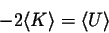
- Also, for both multi-body systems and 2-body systems, total energy is:
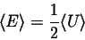
Chapter 3
- Parallax and distance.
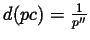 (for baseline = 1 AU)
- Parallax (more general):
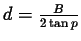
- Flux,
 in erg
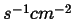
in erg
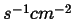
- Luminosity: total energy leaving an object in all directions over all wavelengths
- Monochromatic luminosity:
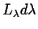 = a luminosity only within the wavelength range 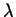 to
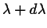.
- Luminosity (blackbody) =
 .
.
- Luminosity (not quite perfect blackbody) =
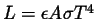.
- Magnitude System
- 5 magnitudes difference correspondes to a flux ratio of 100X.
- smaller numbers means brighter
- apparent magnitude:
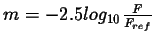
- absolute magnitude, 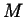: the apparent magnitude of a star at the standard
reference distance (10 pc = 32.6 ly).
- absolute magnitude,
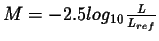 (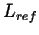
is about
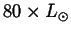.)
- absolute magnitude is a measure of luminosity, apparent is a measure
of brightness.
- Example:
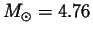,
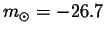,
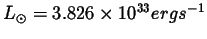
- Distance modulus, (m-M),:

- Distance modulus: an alternative measure of distance that directly
tells you how the brightness of the object differs from its brightness at 10 pc.
- Wave nature of light
- Light has wave properties: interference pattern formed by double-slit
-
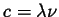
- Time-averaged Poynting Vector: a measure of monochromatic flux
- Time-averaged Poynting Vector:
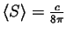
- Radiation pressure is greater when light is completely reflected
than when light is absorbed - transfer of momentum.
- Blackbody radiation
- Blackbody: an ideal emitter and absorber.
- Blackbody absorption: 100%
- Blackbody emission: spectrum obeys Planck function, Wien's Law,
and the Stefan-Boltmann Law.
- Wien's Law:
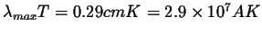
- Stefan-Boltzmann law:
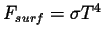
- Planck's Law:

Chapter 5
- Space motion of a star:
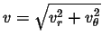
- Bohr model of hydrogen atom
- Proton in nucleus, electron in outer ``shells" or energy levels.
- Ground state: the lowest electron energy level, n=1
- Higher energy levels are labelled n=2, 3, 4, etc.
- An upward transition means atom has absorbed energy
- A downward transition means the atom emits a photon
- Energy of photon,
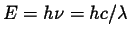
- Spectroscopy - what is it? what are spectra?
- Kirchoff's Laws: how absorption, emission and continuous spectra are formed.
Next: About this document ...
Jason Pinkney
2004-01-16